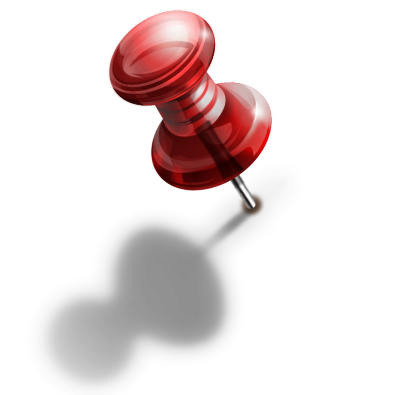

TODO LIST

2057-10-04
проснуться
почистить зубы
позавтракать
принять душ
пойти на работу
П\З
Сверстать простую страничку о себе
(сильно усложнять не надо, это мы сделать еще успеем)
Шаблоны страниц
Информация по тегам
Информация по стилям
страница должна иметь приемлемый вид
шапка
левая\правая секция
подвал
фон